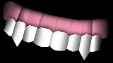

|
Happy Halloween
We hope you all had a good halloween. We did. We went bowling after work
and then we had a halloween party for the gottfolk here. It was a great
success. We were disapointed to see that noone showed up with an
invitation. We also couldn't seem to find a pumpkin anywhere. Actually we
did see a few in grocery stores on display but the odd thing was that none
of these stores had any for sale. Kevin improvised and came up with this
jack-o-lantern. Not bad for an orange.

Instead of having masks we handed out false teeth. This costume,
inspired by Odie, was very popular with the guests. Especially one, Sigge,
who managed to eat almost all of them and left early. He said he had to study
in the morning but I am sure it was really because of a stomach ache.
Bowling was fun and just like last year Kevin's team cleaned up. Kevin got the
highest score on 2 out of 3 games much like me. I managed to get
the LOWEST score on 2 out of 3 games. I had to do something to even things out.
I even managed to get 0, 4 frames in a row!-with my score
totalling a whopping 45 points. I won't have to tell you who's team lost.
That's it for the specials this week. Hope you come back next week. Who knows what
we will be featuring then?
|